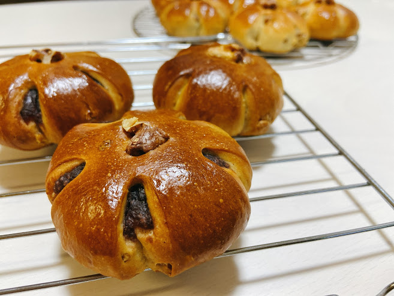
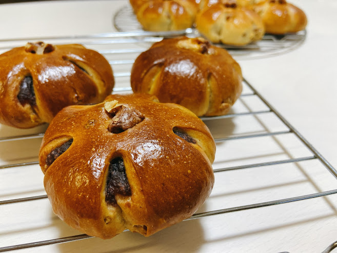

くるみパン
くるみの香ばしさと食感がおいしいくるみパン
ふっくらお花のフォルムが特徴です。
素朴な感じだけどはまってしまう味。。
ふっくらお花のフォルムが特徴です。
素朴な感じだけどはまってしまう味。。
▽フォトギャラリー△
〜 丸め 〜
〜 成形 〜
〜 二次発酵 〜
〜 焼成中 〜
〜 焼きたて 〜
▽材料△
| 材料 | 分量(g) |
|---|---|
| 強力粉 | 200 |
| 薄力粉 | 50 |
| きび砂糖 | 40 |
| 上白糖 | 10 |
| 塩 | 3.5 |
| 卵 | 32 |
| バター | 25 |
| ドライイースト | 3 |
| 水 | 120 |
▽アレンジ△

〜 くるみあんパン 〜
あんこを包んでくるみあんパンに。
はみ出すあんこが美味しそう。。。

〜 くるみあんパン 〜
あんこを包んでくるみあんパンに。
はみ出すあんこが美味しそう。。。
はみ出すあんこが美味しそう。。。